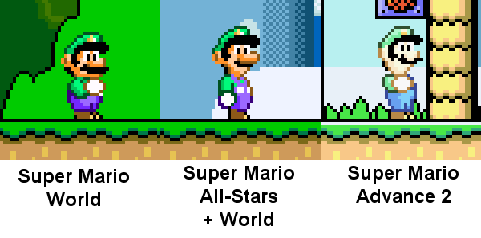

Super Mario World SNES and GBA comparisons

Intro
-This game originally came out in 1990 as a sequel to Super Mario Bros 3. It was included in the 1994 version of Super Mario All-Stars, ported to Virtual Console in 2007, and included in Super NES Classic in 2017. Here we will cover some neat things about the remake/port Super Mario World: Super Mario Advance 2 from 2001. This idea spawned from me owning the manual to both versions and secondly this gamefaqs as linked here. Because that guide is well done and covers a lot, our main focus will be changes in the manuals! Turns out they changed a lot more than you’d think. Read on and enjoy!
The Manual
-The GBA port of Super Mario World’s manual rewords the story found in the original manual. The original explicitly states that SMW takes places after SMB3 however like the great Koopaling dispute that's been changed over the years. Source: Kotaku article
-The original exposes the Mario bros as slackers. It states that they went to sleep when Peach disappeared. The GBA version omits that. In the original, Yoshi calls the turtles monstrous. This is omitted in GBA, I guess the Koopas weren’t so big after all. The next line of dialogue in the original is spoken by Luigi and Mario nods in agreement. The GBA version makes this sound like normal narration and never mentions Mario or Luigi’s response to Yoshi. The Koopalings are called the “Krazy Koopa Kritters” but the GBA calls them “henchmen”. (Remember that the Koopalings is another thing that would be altered a bit in modern times)
The GBA version ends there, but the original goes on to have Yoshi first introduce the Cape to Mario and the narration explains some game details involving exploration. The map and enemy list isn’t in the GBA manual but rather a separate foldout paper and of course the descriptions are changed. Let’s move on to that.
Characters/ Denizens in/of Dinosaur Land The SNES original has this in the manual under “Characters in Dinosaur Land”, the GBA remake has it in a separate mini poster titled “Denizens of Dinosaur Land” which also has the map on the backside. Interestingly, the enemy descriptions are rewritten.
- Koopa: Called Koopa Troopa on GBA. The original refers to them making everything “bleak” when they appear, a curious descriptor. Both versions warn about invincible yellow shelled variants but only the GBA all mentions the colors that can be found.
- Super Koopa: The original is more wordy but otherwise they give similar descriptions.
- Jumpin’ Piranha plants: In a subversion, the GBA version makes them more dangerous and is the only one that mentions “spitting seeds” however the original mentions there being a tropical plant version of a “Volcano Plant”. (I presume the variants that spit the fireballs)
- Goomba: Both say the same thing, jump on it once to flip it over and then they can be thrown. The original is less wordy about it however and the GBA has Goomba as plural. In fact, that’s the case for all of the enemies listed in the GBA version.
- Monty Mole: The original is very brief and to the point. The GBA version makes it more wordy, mentions them “terrorizing the Mario Bros” and saying that the giant ones underground are a rumor, whereas the original just states it as a fact.
- Boo buddies and Big Boo: The original references SMB3 (ah!) and mentions that looking at them makes them “act shy and turn away”. It also calls them cute but dangerous. The GBA version omits that SMB3 reference and calls them “fierce” in one sentence and “cute” in another. It also mentions them being embarrassed which is related to but not the same as being shy.
- Eeries: This enemy is plural in both versions unusually. They say mostly the same things but the original takes a dramatic approach (saying things like “ohhhh what a ghastly spook it is!”) while the remake stays more objective. Notably, the term “spook” is removed from the GBA’s description for reasons you can probably guess.
- Rip Van Fish: Both versions say most of the same things.
- Urchin: Both mention how they aren’t fast but only the GBA version mentions that they move in a pattern. Both also warn to not get hit.
- Dolphin: Completely different descriptions aside from both pointing out that they help Mario cross water. The original calls them “a useful shoal of dolphin look alikes” and the GBA “aquatic speedsters”.
- Rex: Completely different descriptions aside from mentioning that the have to be stomped twice. The original points out that this is the kind of enemy you’d expect on Dinosaur Land (which is not capitalized strangely) and notably speaks in first person regarding if they can fly or not. The GBA is far less wordy and jumps to the point on how to defeat them. Still though, it also doesn’t say with absolute certainly whether they can fly or not.
- Mini-Rhino/ Dino Rhino: Both are similar mentioning that they are found on Chocolate Island and that the mini ones breath fire. The GBA warns you to be careful.
- Bob-omb: Mostly the same but the GBA is more wordy about essentially the same info. They explode into damage dealing stars (so apparently the actual explosion isn't the issue, just the stars that come out) and that they may drop from parachutes.
- Thwomp: Completely different descriptions. The original calls them “nasty stone ghosts”, a description I’ve never seen before and mentions that “if you don’t pass him, you can’t go on” which seems a bit obvious. The GBA just calls them guardians that attempt to crush and trap Mario, nothing weird there.
- Wiggler: Both mention they are found in the forest but only the GBA version says the full name of the Forest of Illusion. They are “quiet” in the original and “docile” in the GBA. The original advises you to “treat Wiggler with respect” but the GBA “on their good side”.
- Magikoopa: Oddly very similar descriptions that even use some of the same phrases like them being “tough customers”.
- Sumo Brother: Similar regarding abilities though they are only “strange fellows” in the original. Both mention karate as well.
- Chargin’ Chuck: Both mention how they tend to be near goals (though that’s not always the case in the game). The original calls their attacks “bull-headed” and only the GBA mentions their “persistence” (aka, these guys actively follow you).
- The Koopalings and Bowser: The original gives us their pictures but has no descriptions for them. The GBA does however but say nothing interesting that isn’t obvious.
The Map of Dinosaur Land As mentioned before, the SNES manual has it on pages 19 and 20, but the GBA in smaller form factor is on a separate paper that folds out. This provides a nicer view to the original, however the descriptions of the locations vary between version. Provided are scans of the fold out on top and the SNES manual under. Notice how the GBA removes 'Kappa Mountain' yet adds 'Vanilla Heights'! Anyway-
- Fortresses: Both mention that Reznor’s are inside but only the SNES version refers to a “spell” being put on them to work for Bowser. Both versions fail to mention how to defeat them and that aside from the fire spitting, the floors collapse.
- Haunted House: Called the more familiar “Ghost House” on GBA. Both mention ghosts in side but “spirits” from the SNES version are changed to “monsters” on GBA. “Doors” from the original are less vaguely called “exits” in the GBA. The both allude to how confusing these levels can be.
- Yoshi’s House: Both mentions that this is the starting point and that Yoshi isn’t home. Yoshi is apparently “elusive” in the SNES version and only it mentions that Yoshi got his name from being found on Yoshi’s Island. Somewhat understandably the GBA would omit that since the Yoshi’s Island franchise existed by then.
- The Castles: Or just “Castles” on GBA. It is very abbreviated compared to the SNES but aside from that they say the same things.
- Mysterious Sunken Ship: If you wanted to rant about inconsistency in Mario, this is another trump card to pull. The SNES references SMB3 with the ship (as in the events actually happened) and is in first person regarding if Bowser is lurking around or not. The GBA is very brief, but hints that this is Bowser’s hide out.
The Game
Controls: The control scheme of the games differ so I’ll be brief. The GBA has less buttons so one shoulder button does the spin jump and the other scrolls the camera. Other than that the games don’t feel that different direct movement wise. The original calls it ‘Special Mario Controls’ but the GBA ‘Special Plumber Power’. Both have a chart of how power up affect Mario but only GBA shows how the damage works. This is a justified because in the original one hit turns you into small Mario regardless of what you had. The GBA is a little abridged in other areas, with no mention of Keyholes, Star road, or Switch Palaces, but it does cover additional items and blocks. Jumping board from SNES becomes Trampoline in GBA. Yoshi’s Wings make you ‘fly’ in SNES but ‘warp’ in GBA, which is more accurate actually. (These are referring to the yoshi wings that take you to a bonus area as opposed to the blue shell powerup kind). Switch blocks/ P-Switches are only mentioned turning blocks into coins in GBA whereas SNES mentions ‘objects’ which spoils the fact that silver variants transform enemies.
Multiplayer: The GBA version has the Mario Bros battle mini game like the Mario Advance games had. The SNES version has a two player mode for the main game where the player cycles between Mario and Luigi. The GBA lacks this but you can swap Mario or Luigi on the map screen.
Saving the game: Gets its own section because it’s pretty big. The SNES has a battery backup which is great, because without warps this game isn’t the shortest ever. Of course in the original you save by beating a fortress or a ghost house or a switch palace. You can replay the levels to save again but you cannot save otherwise. The GBA is a portable game and revamps this like other games in the Mario Advance series. You can save in the middle of a level (though you’ll start outside the level) or on the map anytime and reload anytime. When you remember that the GBA version gives you can extra hit as I’ll go into later (an aspect a lot of people skip when comparing the games) you can see how this trivializes what relatively mild difficulty SMW had in the first place..
Visuals and other things between the manuals: Because Luigi has his own characteristics, the GBA version has a short ‘Luigi Lore’ part. He controls very floaty now, but also affects how Yoshi behaves, coin blocks, fireballs, etc. They went out of their way for it to be more than just a palette swap so that's fine. His sprite differs but remember that this distinction actually came from the All-Stars rerelease of SMW. With all of that said, the sprites are still different! Source Over all the GBA is very bright and kind of ugly when played on a naturally backlit system. Sound quality also suffers. Overall though it's a decent enough port with extras that add to the game like the better save system and addition of a menu to keep up with secret exits and dragon coins.

More resources:
- The gamefaqs by 'The Original L5'
- TCRF: While this covers the Japanese and English SNES titles, some changes carried over to the GBA port years late
- The manual scans belong to me.